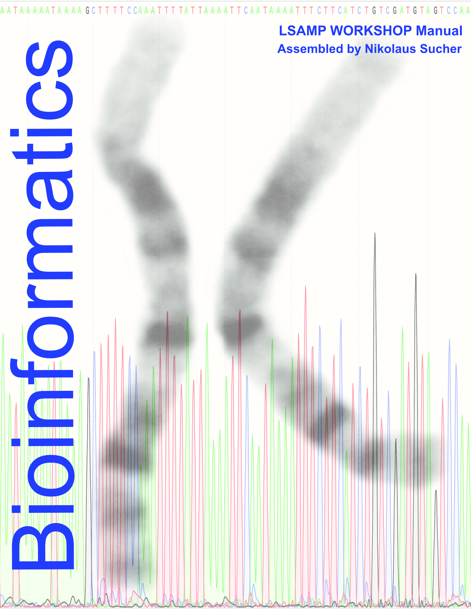

LSAMP Bioinformatics Short Course at Roxbury Community College
Welcome
This is the Laboratory Manual for the Louis Stokes Alliances for Minority Participation (LSAMP) Program Bioinformatics Short course at RCC.

This work is licensed under the Creative Commons Attribution-Share Alike 3.0 Unported United States License.